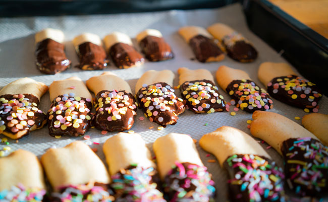

Best-Ever Biscotti
Delectable, crunchy biscotti is the ultimate sweet treat to have with a coffee or tea.
Ingredients
Biscotti:
½ cup butter
1 cup granulated sugar
3 eggs
2 ½ cups all-purpose flour
1 ½ tsp baking powder
Pinch of salt
½ cup white chocolate, chopped
1 cup pistachios, whole
Egg wash:
1 egg
2 tbsp water
2 tbsp turbinado sugar
Caramel sauce:
½ cup water
1 cup granulated sugar
2 tbsp white corn syrup
¼ cup heavy cream
¼ tsp kosher salt
To garnish:
Flaked sea salt
Preparation
Biscotti:
Cream sugar and butter together. Add eggs and whip with hand mixer until combined. Combine flour, baking powder and salt in a separate bowl, whisk to combine. Combine dry into wet with mixer or a spatula.
When mostly combined add in chocolate and nuts. Form into 2 equal sized loafs on a parchment lined baking tray. Brush with egg wash, sprinkle over turbinado sugar. Bake at 350F for 25-30 minutes.
Once removed from oven and cooled slightly, slice into ¼ inch thick slices. Transfer to parchment lined baking tray again. Bake for another 15-20 minutes. Dip in store bought or homemade caramel sauce.
Caramel sauce:
Place sugar and corn syrup in a small saucepan and pour water around the edges of the sugar. Bring mixture to a boil over medium-high heat and cook for 8-10 minutes, brushing the sides of the pan with water until caramel is dark golden brown.
Remove the pot from heat and add the cream, taking extra care as the caramel will steam. Whisk until smooth, and whisk in spiced rum and salt. Cool and store in the fridge until serving.